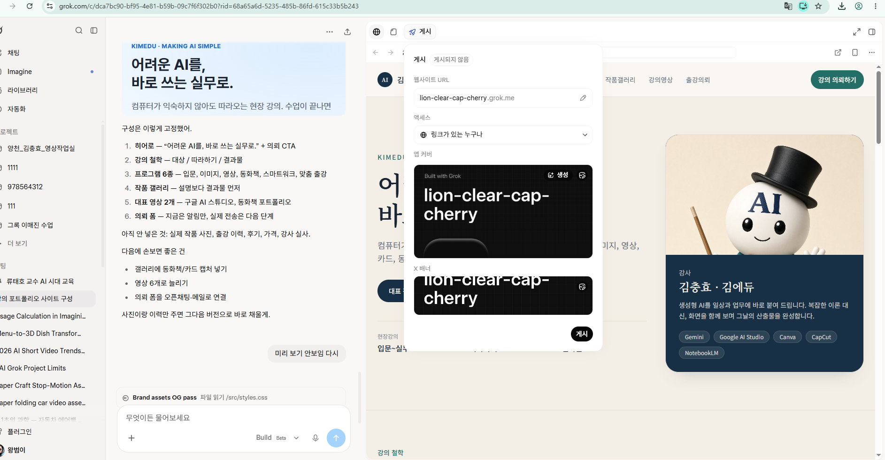
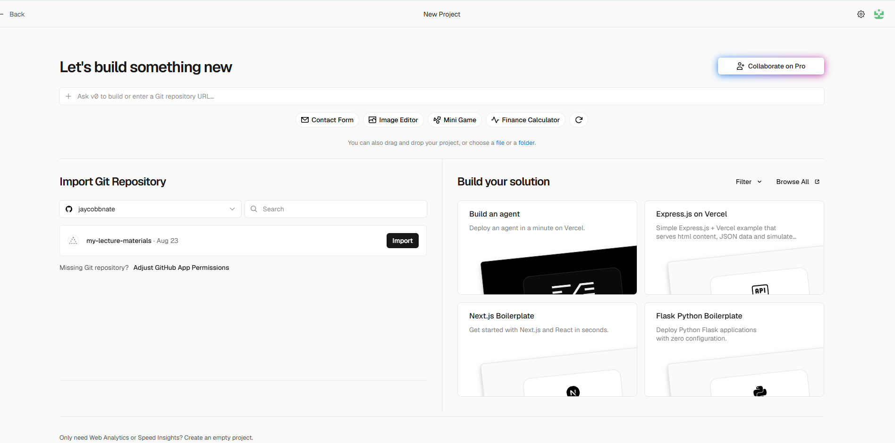
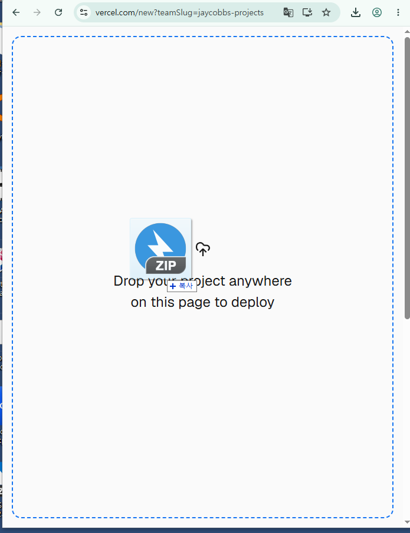
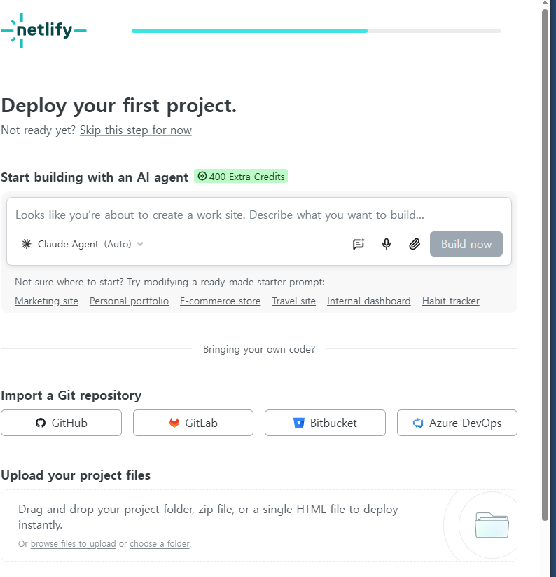
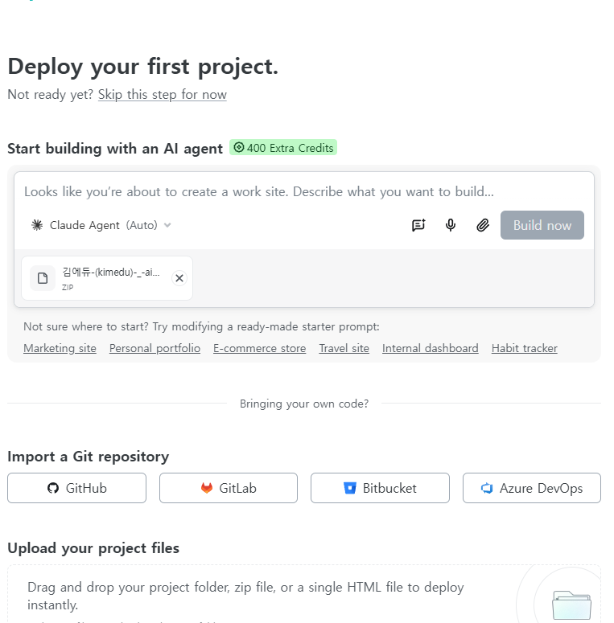
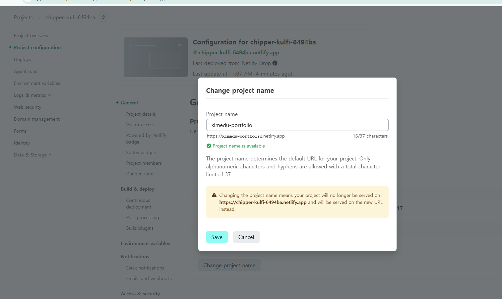

내 홈페이지 만들어 공개하기
[AI Worker] AI 전환 대응 영상 콘텐츠 제작 실무 워크플로우 과정
교육생 배포자료 · 2026-09-11 기준 · 강사 김충효 (Ai.b.Lab)
세션 타당성 블록
| 구분 | 내용 |
|---|---|
| ① 공식 단원명 | [시간표상 공식 단원명 — 강사 확인] |
| ② 오늘 실제 수업 내용 | 지금까지 만든 영상·유튜브·Padlet 결과물을 한 페이지짜리 홈페이지로 묶어 인터넷에 공개한다. 그록 Build에서 소개 글과 디자인 방향을 먼저 정한 뒤 사이트를 만들고, grok.me 주소로 게시한 다음 같은 파일을 Vercel에도 올린다 |
| ③ 연결 근거 (쉬운 말) | 지금까지 만든 영상은 여기저기 흩어져 있다. 오늘은 그것을 나를 설명하는 주소 하나로 묶는다. 영상 제작의 마지막 단계는 "보여 주기"다 |
| ④ 연결 근거 (전문용어) | NCS 영상콘텐츠 제작 — 결과물 배포·홍보 능력단위 연계. 콘텐츠 정리(소개 글) → 시각 방향 설정(디자인 가이드) → 생성형 AI 구현 → HITL 검수 → 게시·정적 호스팅 배포 전 주기 수행 |
| ⑤ 오늘 결과물 | 내 소개 글 · 디자인 가이드 · 홈페이지 · 공개 주소 2개(grok.me, vercel.app) · 정리 파일(ZIP, txt) |
오늘 무엇을 하나
지금까지 영상을 만들어 유튜브에 올리고 Padlet에 정리했습니다. 그런데 그것들이 여기저기 흩어져 있습니다.
오늘은 그 결과물을 한 페이지짜리 홈페이지로 묶습니다. 그리고 인터넷에 공개해서, 주소만 보내면 누구나 볼 수 있게 만듭니다.
코드는 한 줄도 쓰지 않습니다. 그록에게 말로 시킵니다.
### 오늘 받게 될 것
- 내 이름으로 된 인터넷 주소 (
이름.grok.me) - 같은 홈페이지의 두 번째 주소 (
이름.vercel.app) - 내 컴퓨터에 저장된 홈페이지 파일
### 전체 흐름
STEP 1 주소 모으기 ↓ STEP 2 그록에게 규칙 알려주기 ↓ STEP 3 내 소개 글 만들기 ↓ STEP 4 사이트 분위기 정하기 ↓ STEP 5 사이트 만들기 ↓ STEP 6 고치기 ↓ STEP 7 게시하기 — 내 주소가 생긴다 ↓ STEP 8 파일 받기 ↓ STEP 9 Vercel에도 올리기 — 주소 하나 더
앞의 STEP 1~4는 재료를 만드는 단계입니다. 여기서 제대로 준비해야 STEP 5에서 좋은 결과가 나옵니다.
주소 모으기
왜 그록에게 줄 주소가 있어야 시작합니다.
결과 메모장에 주소 네 줄
메모장을 열고 아래를 그대로 붙여넣은 다음 빈칸을 채웁니다.
주소 가져오는 법
유튜브 채널 — 내 채널을 열고 주소창을 복사합니다.
대표 영상 — 홈페이지에 걸고 싶은 영상을 열고 주소창을 복사합니다. 2개에서 4개 사이면 됩니다. 제목도 같이 적어두면 좋습니다.
Padlet — 내 보드 우측 위 공유 → 보드 링크 복사
Padlet 공유 설정 확인
Padlet 공유 화면에서 세 가지를 확인합니다.
| 항목 | 이렇게 |
|---|---|
| 비밀번호 필수 | 끔 |
| 방문자가 로그인해야 함 | 꺼짐 |
| 링크가 있는 방문자 | 읽기 전용 |
앞의 두 개가 켜져 있으면 남이 링크를 눌러도 안 열립니다.
세 번째를 읽기 전용으로 두는 이유는, "작성자"로 두면 링크를 아는 사람이 내 보드에 글을 쓸 수 있기 때문입니다.
사진
프로필 사진이나 작품 캡처가 있으면 바탕화면에 모아둡니다. 파일 이름은 영어로 바꿔둡니다.
profile.jpg— 내 사진work01.jpg,work02.jpg— 작품 캡처
없어도 괜찮습니다. 그록이 물어보고, 없다고 하면 자리만 잡아두고 진행합니다.
그록에게 규칙 알려주기
왜 맨 처음에 한 번만 넣어두면, 뒤에서 짧게 시켜도 알아듣습니다. 모르는 게 있으면 그록이 먼저 물어봅니다.
결과 "네, 준비됐습니다"
맨 처음 한 번만 붙여넣습니다
그록(grok.com)을 열고 Build 모드를 선택합니다. 새 대화를 시작하고 아래를 붙여넣습니다.
너는 나와 함께 내 홈페이지를 만드는 조수다. 나는 AI로 영상을 만드는 사람이고, 만든 것들을 한 페이지짜리 홈페이지로 묶어 인터넷에 공개하려고 한다. 컴퓨터를 잘 다루지 못하니 쉬운 말로 하나씩 진행한다. [진행] - 내가 순서대로 지시를 보낸다. 시킨 것만 하고 멈춰라. - 앞서가서 다음 단계를 미리 하지 마라. [모르면 물어라] - 정보가 모자라면 지어내지 말고 나에게 물어라. - 한 번에 한두 가지만, 예시를 붙여서 물어라. 예: "유튜브 주소를 알려 주세요. youtube.com/@아이디 형태입니다" - 사진이 없으면 물어보고, 없다고 하면 빈 자리만 잡아 두고 계속 진행해라. [지어내지 마라] - 이름, 주소, 영상 제목은 내가 준 것만 쓴다. - 유튜브 채널이나 Padlet을 못 읽으면 못 읽었다고 말하고 나에게 물어라. [말하는 법] - 어려운 말에는 괄호로 쉬운 설명을 붙여라. - 코드를 길게 보여주지 말고 결과 화면으로 보여줘라. 준비됐으면 "네, 준비됐습니다"라고만 답하고 기다려라.
"네, 준비됐습니다"가 뜨면 성공입니다. 다른 말을 길게 하거나 벌써 홈페이지를 만들기 시작하면, 새 대화를 열고 다시 붙여넣습니다.
내 소개 글 만들기
왜 사진과 영상이 있어도 글이 없으면 홈페이지를 못 만듭니다. 직접 쓰면 막막하니 주소만 주고 그록이 쓰게 합니다.
결과 첫 화면 문장 · 소개 3문장 · 작품 설명
주소를 옮겨 적고 붙여넣습니다
STEP 1에서 채운 메모장 내용을 옮겨 넣습니다.
미리 생각해 둔 계획이 있으면 맨 위 빈칸에 붙여넣습니다. 다른 AI와 나눈 대화, 손으로 쓴 메모 무엇이든 좋습니다. 없으면 그 칸은 비워 두고 주소만 채우면 됩니다.
내 홈페이지에 넣을 글을 써 줘. 이 홈페이지 목적: (취업·출강 포트폴리오 / 내 활동 알리기 / 작품 모아두기 / 기타) 미리 생각해 둔 계획이 있으면 여기에: 이름: 유튜브 채널: 대표 영상 2~4개 주소: Padlet: 목적에 맞게 써 줘. 채널을 못 읽으면 지어내지 말고 물어봐. '첫 화면 문장 / 소개 3문장 / 작품 설명'으로 정리해 줘.
목적을 먼저 정하는 이유
취업·출강용인지, 내 활동을 알리는 용도인지에 따라 글의 방향이 달라집니다. 이게 정해져야 나중에 사이트 모양도 거기에 맞게 나옵니다.
괄호 안에서 골라 적으면 됩니다. 다 아니면 "기타" 자리에 적습니다.
여기서는 글만 만듭니다
사진은 STEP 5에서 넣습니다. 지금 사진을 찾을 필요 없습니다.
⚠ 나온 글은 꼭 읽어보세요
그록이 유튜브 채널을 못 읽었으면 비슷한 영상 제목을 지어냈을 수 있습니다.
내가 만들지 않은 제목이 섞여 있으면 이렇게 말하면 됩니다.
마음에 안 들면
말로 하면 됩니다.
- "더 짧게"
- "너무 딱딱하다, 편하게"
- "AI 강사 말고 영상 만드는 사람으로"
사이트 분위기 정하기
왜 "예쁘게 만들어 줘"라고 하면 AI가 제멋대로 만듭니다. 마음에 드는 홈페이지 사진을 보여주고 "이 느낌"이라고 말해야 합니다.
결과 디자인 가이드 5줄
먼저 핀터레스트에서 캡처합니다
Pinterest에서 아래 단어로 검색해 마음에 드는 홈페이지 화면을 캡처합니다.
결이 비슷한 것끼리 고르세요. 밝은 것과 어두운 것을 섞으면 AI가 평균을 내서 어중간한 화면이 나옵니다.
확인법 — 배경 밝기, 글자 크기, 사진 크기. 셋 중 둘 이상이 같은 방향이면 됩니다.
캡처를 첨부하고 붙여넣습니다
첨부한 사진은 내가 마음에 드는 홈페이지야. 이걸 내 홈페이지 디자인 가이드로 5줄 이내로 정리해 줘. 색, 글자, 여백, 사진 배치, 전체 느낌 순으로. "깔끔하게" 같은 뭉뚱그린 말 말고 구체적으로. 결이 다른 사진이 섞여 있으면 먼저 말해 줘.
마지막 줄이 안전장치입니다
결이 다른 캡처를 섞어 왔으면 그록이 먼저 알려줍니다.
이때 하나를 빼거나, 일부러 섞겠다고 말하면 됩니다.
나온 5줄은 그대로 둡니다. 같은 대화 안에 있으니 다음 STEP에서 알아서 씁니다.
사이트 만들기
왜 앞에서 만든 글과 디자인 가이드로 실제 홈페이지를 만듭니다.
결과 화면에 보이는 홈페이지
사진을 먼저 올립니다
프로필 사진, 작품 캡처가 있으면 대화창에 올립니다. 없으면 그냥 넘어갑니다.
중요한 사진은 한 장씩 올리면서 말해 주면 자리가 덜 틀립니다.
이 사진은 맨 위 큰 배경에 써 줘.
한꺼번에 여러 장 올리면 그록이 짐작해서 배치하니까 자리가 바뀔 수 있습니다.
홈페이지 만들기
지금까지 만든 글과 디자인 가이드로 한 페이지짜리 홈페이지를 만들어 줘. 순서: 첫 화면 → 소개 → 작품 → 유튜브·Padlet 버튼 첨부한 사진을 넣고, 없는 자리는 비워 둬. 주소는 내가 준 것만 써. 휴대폰에서도 깨지지 않게. 한 번에 완성해 줘.
짧아도 되는 이유
기획서와 디자인 가이드가 같은 대화 안에 이미 있습니다. 그래서 "지금까지 만든"이라고만 해도 알아듣습니다.
⚠ 첫 결과가 마음에 안 들어도 정상입니다
한 번에 완벽하게 나오지 않습니다. 다음 STEP에서 고칩니다.
고치기
왜 첫 결과는 초안입니다. 눈으로 보고 고칩니다.
결과 다듬어진 홈페이지
세 가지만 확인합니다
세 가지만 확인해서 고쳐 줘. 1. 내 이름과 주소가 맞는지 2. 사진이 제대로 들어갔는지 3. 휴대폰 화면에서 글자가 잘리지 않는지 고친 것만 한 줄씩 알려 줘.
영상 제목을 꼭 눌러보세요
화면에 뜬 영상이 진짜 내 영상인지 확인합니다. 그록이 채널을 못 읽었으면 비슷한 제목을 지어냈을 수 있습니다.
사진이 이상하면 이렇게 말하세요
파일 이름을 몰라도 됩니다. 보이는 대로 말하면 알아듣습니다.
- "맨 위 큰 사진을 바꿔줘"
- "두 번째 사진이 잘려 보여"
- "세 번째 칸 사진을 첫 번째로 옮겨줘"
- "내 얼굴 사진이 너무 작아"
몇 번째인지만 세어서 말하면 됩니다.
디자인이 마음에 안 들면
- "글자가 너무 작다"
- "작품 칸을 더 크게"
- "색이 너무 튄다"
- "첫 화면 사진이 잘린다"
고칠 때 다른 데가 망가지면
한 줄을 덧붙입니다.
게시하기
왜 지금까지는 그록 안에서만 보입니다. 게시해야 남이 볼 수 있습니다.
결과 이름.grok.me 주소
미리보기 위 게시 버튼을 누르면 게시 창이 열립니다.

| 칸 | 무엇을 하나 |
|---|---|
| 웹사이트 URL | 무작위 이름이 붙어 있습니다. 오른쪽 연필을 눌러 내이름-portfolio 같은 영어 이름으로 바꿉니다 |
| 액세스 | 링크가 있는 누구나로 둡니다. 그래야 카톡으로 보낸 사람이 볼 수 있습니다 |
| 앱 커버 | 카톡으로 링크를 보낼 때 뜨는 대표 이미지입니다. 그록이 자동으로 만듭니다 |
| X 배너 | 안 써도 됩니다 |
| 게시 | 검은 버튼. 누르면 공개됩니다 |
주소 이름 규칙
영어와 숫자, 하이픈(-)만 됩니다. 이미 쓰는 이름이면 빨간 글씨가 뜨니 뒤에 숫자를 붙입니다.
게시 후
주소를 복사해 스마트폰으로 열어봅니다. 사진과 링크가 다 나오면 성공입니다.
⚠ 고친 뒤에는 다시 게시
미리보기에서 고쳐도 공개된 사이트는 그대로입니다. 게시 버튼을 다시 눌러야 바뀝니다.
파일 받기
왜 그록에만 두면 그록 안에서만 삽니다. 파일로 받아두면 어디든 올릴 수 있고, 나중에 다른 AI로도 다시 만들 수 있습니다.
결과 ZIP 하나, txt 하나
두 가지를 한 번에 받습니다
두 가지를 만들어 줘. 1. 이 홈페이지를 내 컴퓨터로 받을 수 있게 ZIP 파일로 사진이 안 딸려오면 사진을 HTML 안에 넣은 파일 하나로 2. 지금까지 만든 걸 txt 파일 하나로 정리 내 소개 글, 디자인 가이드, 사이트 구조, 사진 파일 이름, 유튜브·Padlet 주소 전부 다른 AI가 이것만 보고 똑같이 만들 수 있게
ZIP은 열어서 확인합니다
받은 파일을 압축 풀고 index.html을 더블클릭합니다. 브라우저가 열리면서 홈페이지가 보입니다.
사진이 다 보이면 성공입니다. 회색 네모나 깨진 그림이 보이면 사진이 안 딸려온 겁니다. 그때는 1번의 두 번째 줄을 다시 보냅니다.
txt는 훑어만 봅니다
내 이름과 주소가 제대로 적혀 있으면 됩니다.
이 파일이 오늘의 보험입니다. 그록 대화가 사라져도, 나중에 다른 AI를 쓰게 돼도, 이 파일만 있으면 똑같이 만들 수 있습니다.
Vercel에도 올리기
왜 같은 파일을 다른 곳에도 올려봅니다. 주소가 하나 더 생기고, 그록 밖에서도 사이트가 산다는 걸 확인합니다.
결과 이름.vercel.app 주소
프롬프트가 없습니다. 마우스로만 합니다.
순서
vercel.com접속 → 회원가입/로그인 (구글 계정으로 간단히 가능)- 오른쪽 위 검은 Add New 버튼 → Project
- "Let's build something new" 화면이 열립니다
- ZIP 파일을 이 화면에 그대로 끌어다 놓습니다
- 프로젝트 이름 입력 (영어) → Deploy
- 1~2분 기다리면 주소가 나옵니다
- 스마트폰으로 열어 확인합니다


압축을 풀지 않습니다
ZIP 그대로 던지면 Vercel이 알아서 처리합니다.
고치고 싶으면
Vercel은 새로 올릴 때마다 새 주소가 생깁니다. 그록에서 고친 뒤 ZIP을 다시 받아 올리면 됩니다.
Netlify에도 올려보기
Vercel 말고 Netlify라는 곳에도 올릴 수 있습니다. 시간이 남으면 해보세요.
순서
netlify.com가입/로그인- "Deploy your first project" 화면이 나옵니다
- 화면 맨 아래로 스크롤 → Upload your project files 영역
- 여기에 ZIP 파일을 끌어다 놓습니다
- 주소가 나옵니다

⚠ 위쪽 AI 채팅창에 넣지 마세요
화면 위쪽에 "Start building with an AI agent"라는 채팅창이 있습니다. 여기에 ZIP을 떨어뜨리면 배포가 아니라 "이 파일로 새로 만들어 줘"가 되고 AI 크레딧을 씁니다.
파일이 채팅창에 붙었으면 오른쪽 X로 떼어내고, 반드시 맨 아래 Upload 영역에 놓습니다.

배포 후 두 가지
① Make public — 배포 직후 사이트 이름 옆에 Private 자물쇠가 붙어 있습니다. 이 상태면 나만 보입니다. 하늘색 Make public 버튼을 눌러야 남이 열 수 있습니다.
② 주소 이름 바꾸기 — 기본 주소가 무작위 이름입니다. Project configuration → General → Change project name에서 바꿉니다.

Netlify의 장점
고친 파일을 다시 끌어다 놓으면 같은 주소가 유지됩니다. Vercel은 올릴 때마다 새 주소가 생기는데, Netlify는 주소가 그대로입니다.
Netlify 가입이 막혔을 때
한 교실에서 여러 명이 동시에 가입하면 Netlify가 자동으로 계정을 정지시키는 경우가 있습니다. 같은 인터넷 회선에서 여러 계정이 한꺼번에 만들어지니 기계가 스팸으로 오해하는 겁니다.
내 잘못이 아닙니다. Netlify 공식 게시판에도 같은 신고가 계속 올라오고 있습니다.
당장은 넘어갑니다
이미 만든 grok.me 주소와 Vercel 주소는 그대로 있습니다. Netlify는 안 해도 오늘 목표는 달성한 겁니다.
복구 신청하는 법
answers.netlify.com에 접속합니다. 포럼 계정을 따로 만들어야 합니다(구글 계정으로 가능).
New Topic → 카테고리 Support 선택
제목:
본문:
Hello Netlify Support, My account was suspended immediately after signup. I am a student in a web publishing class. Several people signed up from the same classroom network at the same time, which may have triggered the automated spam filter. I have not uploaded any spam or malicious content. Could you please review and restore my account? Account email: (본인 이메일) Thank you.
"같은 교실에서 동시에 가입했다"는 문장이 중요합니다. 오탐 판단 근거가 됩니다.
답변까지 며칠 걸립니다. 급하지 않으면 그냥 두셔도 됩니다.
Google AI Studio로도 만들어보기
같은 재료로 다른 AI는 어떻게 만드는지 비교해볼 수 있습니다.
⚠ 먼저 알아둘 것 — 사진이 제대로 안 들어갑니다
AI Studio는 사진을 자기 마음대로 바꾸거나 없는 그림을 지어내는 문제가 있습니다. 구글 개발자 게시판에도 같은 신고가 1년 가까이 쌓여 있고 아직 해결되지 않았습니다.
파일을 올려도 화면에 안 나타나거나, 엉뚱한 인터넷 사진이 들어갑니다. 내가 잘못해서 그런 게 아닙니다.
그래서 AI Studio는 글과 배치를 비교해보는 용도로만 쓰는 것을 권합니다.
순서
aistudio.google.com접속 → Build 선택 → 새 프로젝트- STEP 8에서 받은 txt 파일을 첨부합니다
- 아래를 붙여넣습니다
첨부한 txt 파일대로 한 페이지짜리 홈페이지를 만들어 줘. 주소는 파일에 적힌 것만 써. 새 이미지를 만들거나 인터넷 사진을 가져오지 마. 휴대폰에서도 깨지지 않게.
- Export → Download ZIP으로 받습니다
사진을 넣어보려면
사진은 대화창이 아니라 파일 목록에 올려야 합니다. 대화창에 올린 사진은 AI가 보기만 하고 프로젝트에는 들어가지 않습니다.
왼쪽 파일 목록에서 assets 폴더를 만들고 거기에 업로드한 다음 이렇게 시킵니다.
파일 이름은 영어로 짓습니다. 한글이나 띄어쓰기가 있으면 실패합니다.
사진을 바꿨는데 화면이 그대로일 때
브라우저가 옛날 사진을 기억하고 있어서입니다.
같은 이름의 파일을 새 것으로 바꿔 올리면, 브라우저는 "그 사진 이미 갖고 있는데?" 하고 저장해둔 옛날 것을 보여줍니다. 파일은 바뀌었는데 화면만 안 바뀐 겁니다.
해결 순서
① 미리보기 화면에서 Ctrl + Shift + R을 누릅니다. 저장된 것을 버리고 새로 받아옵니다.
② 그래도 그대로면 파일 이름을 바꿔서 올립니다. hero.jpg → hero2.jpg로 바꾸고 "assets 폴더의 hero2.jpg를 써"라고 시킵니다. 이름이 다르니 브라우저가 새 파일로 인식합니다. 이게 제일 확실합니다.
③ 그래도 안 되면 코드를 확인합니다.
assets/hero.jpg가 아니라 https://... 같은 인터넷 주소가 나오면, 애초에 내 파일을 안 쓰고 있던 겁니다. 파일을 아무리 바꿔도 화면이 안 바뀌는 게 당연합니다.
그래도 안 되면 — 그록으로 가져가기
AI Studio에서 받은 ZIP을 그록에 올리고 사진을 넣어달라고 하면 됩니다. 그록은 사진이 제대로 들어갑니다.
AI Studio가 못 한 것을 그록이 마무리하는 방식입니다.
나중에 해볼 것
내 도메인 붙이기
이름.grok.me 대신 kimedu.kr 같은 내 주소를 붙일 수 있습니다. 그록 Build, Vercel, Netlify 모두 지원합니다.
도메인 값이 연 1~2만 원 정도 들고, 산 곳에서 주소 설정을 한 번 해주면 됩니다. 반영까지 몇 분에서 하루 정도 걸립니다.
사진 더 넣기
오늘 사진 없이 넘어간 자리가 있으면, 나중에 그록 대화에 다시 들어가 사진을 올리고 "여기에 넣어줘"라고 하면 됩니다. 고친 뒤 게시 버튼을 다시 누르는 것을 잊지 마세요.
계속 고치기
그록 대화를 즐겨찾기 해두면 언제든 다시 들어가 고칠 수 있습니다. 대화가 사라져도 STEP 8의 txt 파일이 있으면 처음부터 다시 만들 수 있습니다.
오늘 기억할 다섯 가지
- 홈페이지를 만들기 전에 글부터 만든다.
- "예쁘게"라고 하지 말고 마음에 드는 화면을 보여준다.
- AI는 모르는 것을 지어낸다. 영상 제목과 주소는 꼭 확인한다.
- 첫 결과는 초안이다. 보고 고치는 게 정상이다.
- 고친 뒤에는 다시 게시해야 바뀐다.